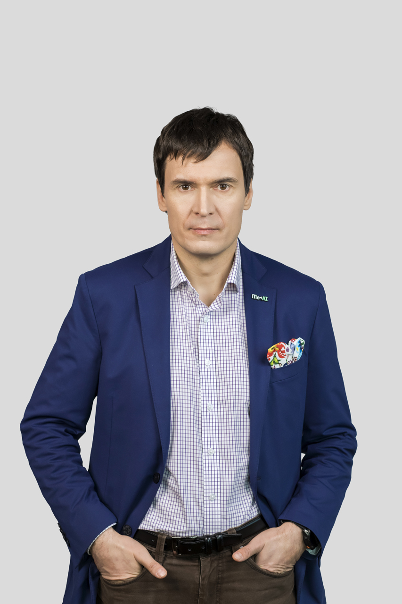

Wikipedia & peer production
Twenty years of ethnographic and governance work inside the encyclopedia that everyone uses but few understand. Recent pieces in Nature, Computer, and IEEE Spectrum.
Est. 1975 · Sociologist
I study how the internet makes knowledge, ignorance, and the way we work together. Wikipedia, AI, anti-science, and peer production are the threads I keep pulling on.

My work began with knowledge workers and software engineers, then drifted to Wikipedia, where I spent years as an ethnographer inside the project. Common Knowledge? (Stanford, 2014) came out of that. Since then I've kept asking the same family of questions in different shapes: how do strangers collaborate at scale, what counts as expertise, and what happens when bots, trolls, and generative models start crowding the room.
These days I write about anti-science, the architecture of non-knowledge, and the social consequences of AI. I founded the NeRDS group at Kozminski in 2013, head the MINDS department, and run a small AI photography company on the side. I am married to Natalia Banasik-Jemielniak, a psychologist of irony.
I serve on boards (Wikimedia Foundation for a decade, now EIT and Copernicus Science Centre) and review grants for the European Commission. I also write columns in Nowa Fantastyka when I want to think about space, nanotech, or the strangeness of digital life without footnotes.
Twenty years of ethnographic and governance work inside the encyclopedia that everyone uses but few understand. Recent pieces in Nature, Computer, and IEEE Spectrum.
How climate denial, flat-earth forums, vaccine fear, and UFO mythologies organize themselves online. A book on this is out with Routledge in 2026.
Gender and racial bias in image generators, AI in academic writing, the limits of Asimov's laws, and what happens to expertise when models can fake it.
A methodology that refuses the choice between computational social science and ethnography. The book is out with Oxford.
A short, urgent book on the social machinery behind the rejection of science. Forthcoming.
A practical, ethical guide for scholars who use generative AI. With Eldar Haber, Artur Kurasiński and Aleksandra Przegalińska.
Emerging technologies and business strategy. With Aleksandra Przegalińska.
Doing digital social sciences without choosing between scale and depth.
On the social form behind Wikipedia, open source, and platform cooperatives. With Aleksandra Przegalińska. Named a top-20 read of the year by Polityka.
An ethnography of Wikipedia. The book that started a research career inside the encyclopedia.
Software engineers, autonomy, and the strange politics of expert labor.
The academic community has failed Wikipedia for 25 years
Nature, World View
Wikipedia at 25: The Encyclopedia That Might Not Last
Computer, IEEE
Introducing the j-metric: a true measure of what matters in academia
Nature, Career column
Asimov's Laws of Robotics Need an Update for AI
IEEE Spectrum
The changing language and sentiment of conversations about climate change in Reddit posts over sixteen years
Nature Communications Earth & Environment (with G. Fariello)
How to Sabotage Your Board
MIT Sloan Management Review (with J. Hugget)
Regular keynote speaker on AI, peer production, and digital society. Recent venues include Wikimania (Katowice, 2024), Telus International Summit (Vienna), NISO (USA), Bibliothèques Européennes de Théologie (Lviv), Madeira ITI, Viadrina University, and Universidad Autónoma de Madrid.
I have spoken or consulted for Rossmann, Samsung, BNP Paribas, Nationale-Nederlanden, and clients in the energy sector, plus the Polish Ministry of Science, the European Commission, and the Wikimedia Foundation.
Quoted in Wired, The New York Times, Der Spiegel, Forbes, Slate, Inside Higher Ed, and across Polish media (Newsweek Polska, Gazeta Wyborcza, TVN, Polsat). I write a popular-science column in Nowa Fantastyka.
Open to keynotes, collaborations, doctoral supervision, and serious questions about ignorance.